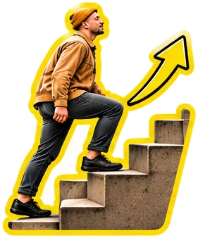
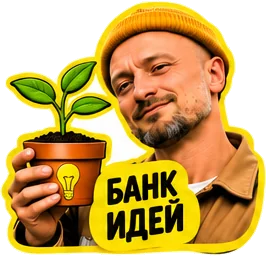

Креатив-тренажёрНиколай Леммер
Качаем креатив, как мышцы
Каждый день короткая тренировка: таймеры, задачки, поля для идей. Мышцы растут, банк идей пополняется, в конце видно рост в цифрах.
Какую мышцу качаем первой?
Не знаю — пройти тест «Твоя слабая мышца»Креатив-тренажёр
🔥 0
Общий уровень
Уровень 1

Тренировка дня
Мышцы
нажми, чтобы открытьУпражнение 01
Банк идей
Всё, что ты придумал в тренажёре, падает сюда. Раз в неделю перечитывай и ставь ★ живым.

Прогресс
0дней подряд
0тренировок
0идей в банке
Мышцы
Последние 28 дней
Жёлтый день — была тренировка. Не рви цепочку.
Скрепка: идей за 10 минут
Это твой замер беглости. Делай «скрепку» раз в неделю и смотри, как растёт столбик.
Хочешь быстрее?
Разберу твою слабую мышцу лично: где именно застреваешь и что качать в первую очередь.
Разобрать мою мышцу с НиколаемТетрадь прогресса на 30 дней — напиши в нельзяграме @nikolay_lemmer слово КРЕАТИФФ.
Упражнения по книгам Намаконова, Рубина, Альтшуллера, Микалко, де Боно, Линча, Чиксентмихайи, Клеона. Прогресс хранится на этом устройстве.
Николай Леммер · @nikolay_lemmer